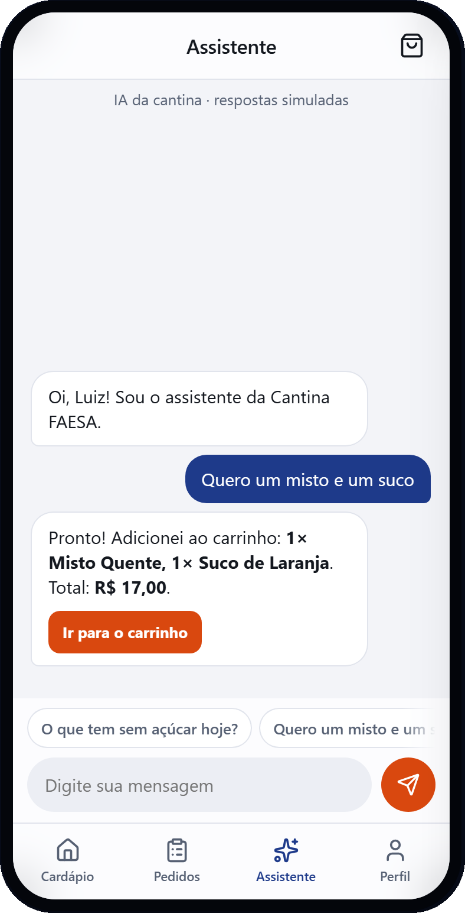
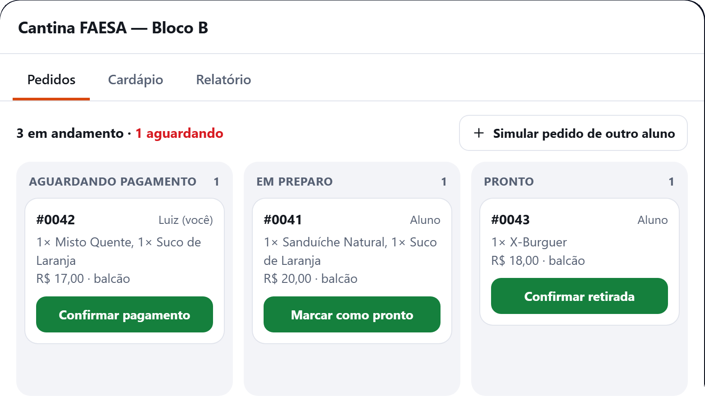

Pedido antecipado com agente de inteligência artificial
e pagamento por ticket no balcão
Situações comuns que acontecem
Aplicação web responsiva, usada no celular ou no computador
Diferencial do projeto: o agente de IA atende o aluno por conversa e já monta o carrinho.
Três perfis de uso
Cada camada tem uma responsabilidade clara
Decisões tomadas nas reuniões de 30/08 e 01/09 e na etapa atual


Protótipo em HTML com dados fictícios.
Planejamento e protótipo concluídos; desenvolvimento começa agora
Obrigado! Perguntas?